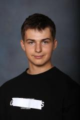

2004
Föddes 24 Oktober i Stockholm, Sverige
 Mitt namn är Rocco Molero, jag är en 16-årig gymnasieelev som studerar Teknik på International IT College of Sweden. Mina intressen är basket, spel, programmering och att resa.
Ända sen jag var liten har jag haft en passion för äventyr, och tack vare mina föräldrar har jag också haft möjligheten att uppleva många på våra resor runt världen. Jag har skapat denna reseblogg för att dela med mig av mina reseupplevelser och för att inspirera andra resenyfikna. Min förhoppning är att så många som möjligt ska ha möjligheten att resa och skapa oförglömliga minnen på nya ställen. Nedan följer en tidslinje på några av mina favoritresor:
Föddes 24 Oktober i Stockholm, Sverige
Besökte Spanien och Litauen för första gången
Åkte till Indien,där jag bl.a besökte New Delhi och Trivandrum
Besökte Japan, där jag var i Osaka och Kyoto för det mesta
Åkte till Italien, där jag besökte Milano
Åkte på en "jorden runt" resa, där jag stannade i USA, Polynesien och Singapore
Gjorde en bilresa till Norrland där vi kom ända upp till Abisko
Många spännande reseplaner väntar mig i framtiden!